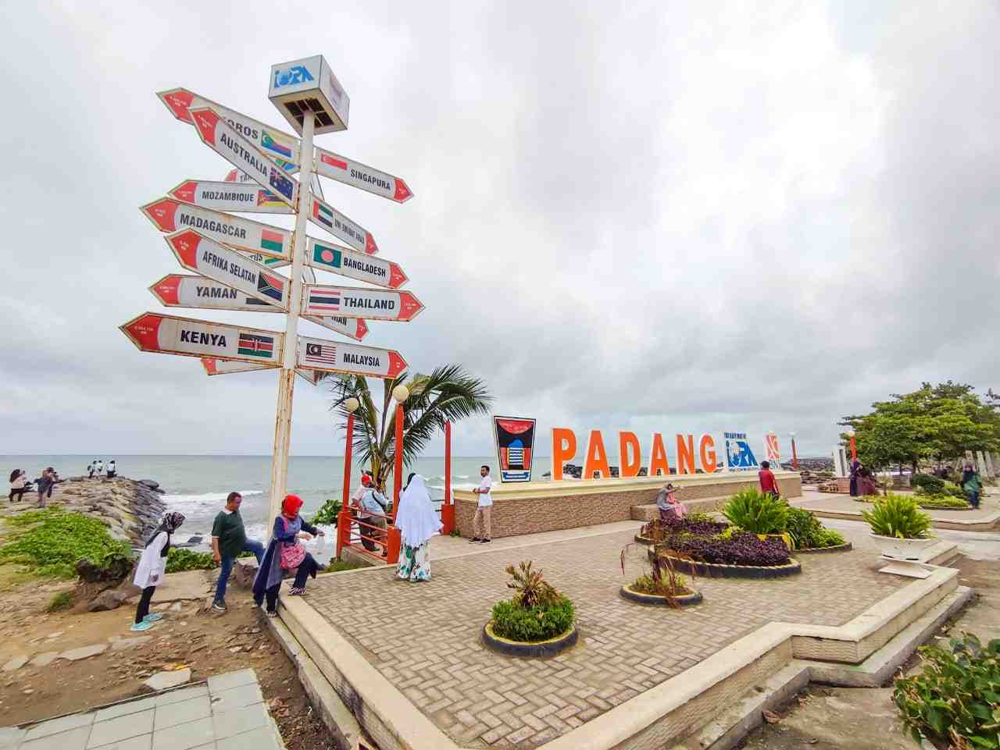
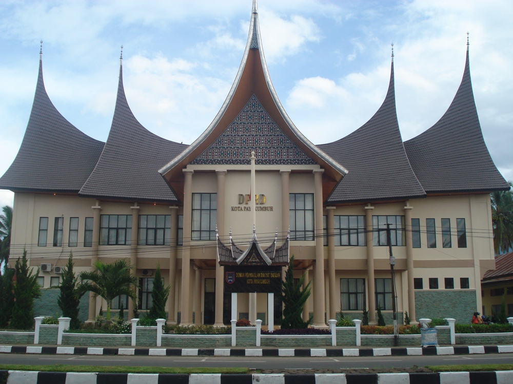
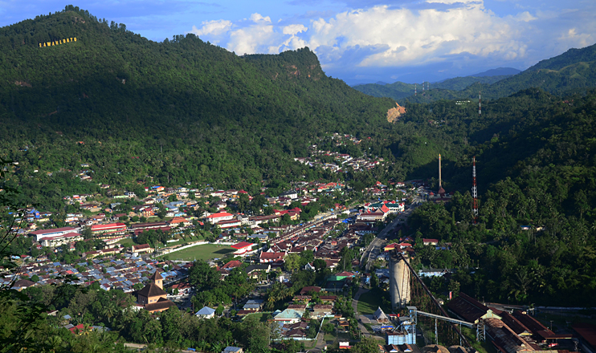
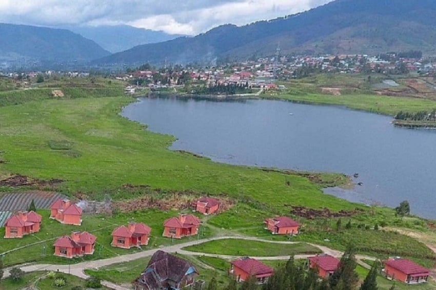

Bukittinggi
Kota Bukittinggi (bahasa Minangkabau: Bukiktinggi; Jawi, بوكيق
تيڠڬي) adalah kota dengan perekonomian terbesar kedua di Provinsi
Sumatera Barat, Indonesia.[6] Sebagai enklave dari Kabupaten Agam,
kota ini pernah menjadi ibu kota Indonesia pada masa Pemerintahan
Darurat Republik Indonesia.[7][8] Kota ini juga pernah menjadi ibu
kota Provinsi Sumatra dan Provinsi Sumatra Tengah.[9] Kota ini pada
zaman kolonial Belanda disebut dengan Fort de Kock dan mendapat
julukan sebagai Parijs van Sumatra. Bukittinggi dikenal sebagai kota
perjuangan bangsa dan merupakan tempat kelahiran beberapa tokoh
pendiri Republik Indonesia, di antaranya adalah Mohammad Hatta dan
Assaat yang masing-masing merupakan proklamator dan pejabat presiden
Republik Indonesia.
Padang

Kota Padang adalah kota terbesar di pantai barat Pulau Sumatra
sekaligus ibu kota Provinsi Sumatera Barat, Indonesia. Kota ini
adalah pintu gerbang barat Indonesia dari Samudra Hindia.[7] Secara
geografi, Padang dikelilingi perbukitan yang mencapai ketinggian
1.853 mdpl dengan luas wilayah 694,96 km²,[8] lebih dari separuhnya
berupa hutan lindung.[9] Berdasarkan data Badan Pusat Statistik
(BPS) pada 2022, kota ini memiliki jumlah penduduk sebanyak 919.145
jiwa,[3] dan pada akhir tahun 2024, penduduk Padang sebanyak 946.982
jiwa.[2][3] Padang merupakan kota inti dari pengembangan wilayah
metropolitan Palapa. Penduduk Kota Padang terus meningkat pada tahun
2024 yang berjumlah sebanyak 954.177 dengan laju pertumbuhan sebesar
1,26% per tahunnya.[10]
Padang Panjang

Kota Padang Panjang adalah salah satu kota dengan luas wilayah
terkecil yang ada di Provinsi Sumatera Barat, Indonesia. Kota ini
memiliki julukan sebagai Kota Serambi Mekkah,[5] dan juga dikenal
sebagai Mesir van Andalas (Egypte van Andalas).[6] Sementara wilayah
administratif kota ini dikelilingi oleh wilayah administratif
Kabupaten Tanah Datar. Pada pertengahan tahun 2021, jumlah penduduk
Padang Panjang sebanyak 59.998 jiwa.[2]
Pariaman

Kota Pariaman adalah sebuah kota yang terletak di provinsi Sumatera
Barat, Indonesia. Kota ini berjarak sekitar 56 km dari Kota Padang
atau 25 km dari Bandara Internasional Minangkabau. Pada tahun 2021,
jumlah penduduk kota ini sebanyak 95.519 jiwa.[2] Pariaman[5]
merupakan daerah penyangga dari pengembangan wilayah metropolitan
Palapa.
Payakumbuh

Kota Payakumbuh (bahasa Minangkabau: Payokumbuah; Jawi, ڤايوكومبواه)
adalah sebuah kota yang berada di provinsi Sumatera Barat,
Indonesia. Kota Payakumbuh[5] merupakan daerah kantong (enclave)'
dari Kabupaten Lima Puluh Kota. Pada pertengahan tahun 2021, jumlah
penduduk kota Payakumbuh sebanyak 141.171 jiwa.[2]
Sawahlunto

Sawahlunto adalah sebuah kota di provinsi Sumatra Barat, Indonesia,
yang terkenal sebagai kota tambang batu bara bersejarah peninggalan
Belanda. Kota ini kini bertransformasi menjadi kota wisata budaya
dan sejarah, dengan banyak cagar budaya dan bekas tambang yang
dijadikan objek wisata seperti Museum Gudang Ransum dan Terowongan
Lubang Mbah Suro. Sawahlunto telah resmi masuk sebagai Situs Warisan
Budaya Dunia UNESCO pada tahun 2019.
Solok

Kota Solok Merupakan salah satu kotamadya yang berada di provinsi
Sumatera Barat, Indonesia. Pada pertengahan tahun 2024, jumlah
penduduk kota Solok sebanyak 83.907 jiwa.[2] Lokasi kota Solok
sangat strategis, karena terletak pada persimpangan jalan antar
provinsi dan antar kabupaten/kota. Dari arah Selatan merupakan jalur
lintas dari provinsi Lampung, provinsi Sumatera Selatan dan provinsi
Jambi. Kelurahan IX Korong Kecamatan Lubuk Sikarah adalah pusat
pemerintahan kota ini.